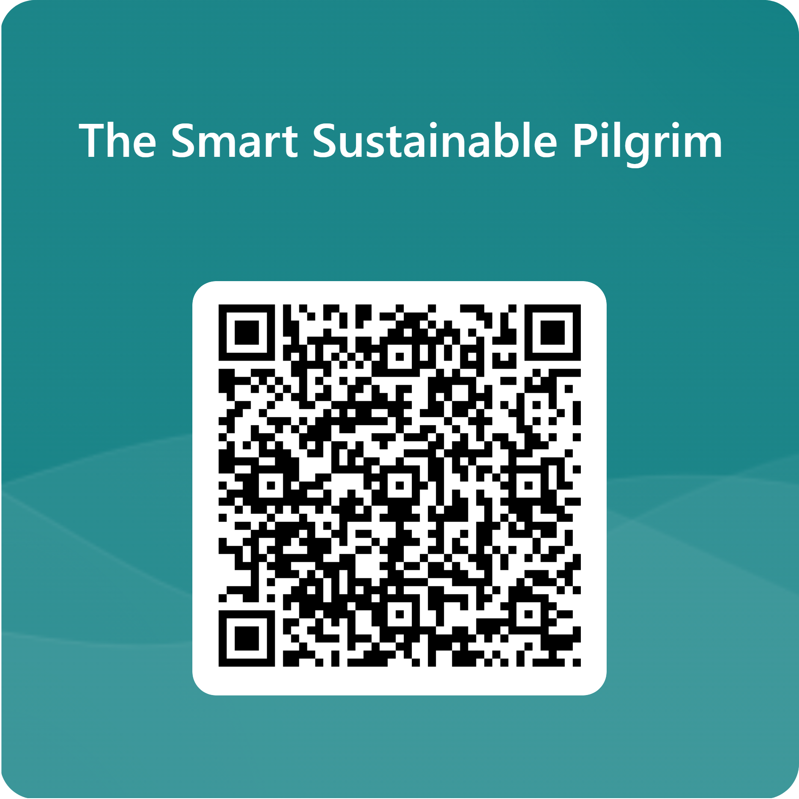

The Pilgrimage
An inspiring journey on foot through northern Spain, along the classic Pilgrim route. Here you will find day-by-day information, images and diary entries from the entire journey.
Weekly Overview
Explore each week's stages, including distances, accommodation and photos. Click through to each day's walk.
Weeks
Map
Follow the entire pilgrimage on an interactive map
Laddar karta...
Welcome to Survey "The Smart Susainable Pilgrim"
Share how tech, sustainability, motivation and the new Compostela rules shape your Camino. University of Gothenburg study. Anonymous, voluntary, take just a few minutes. Buen Camino!
Participate in the Survey
This QR code links to the survey for the Camino Francés research project. Scan it with your mobile device to participate or share the survey easily.